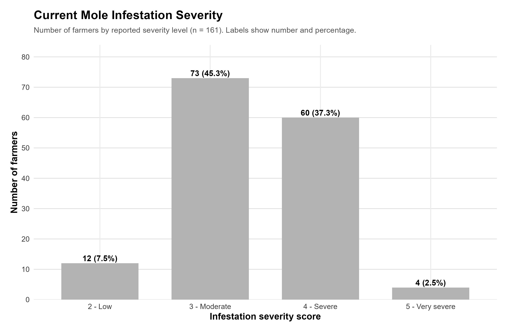
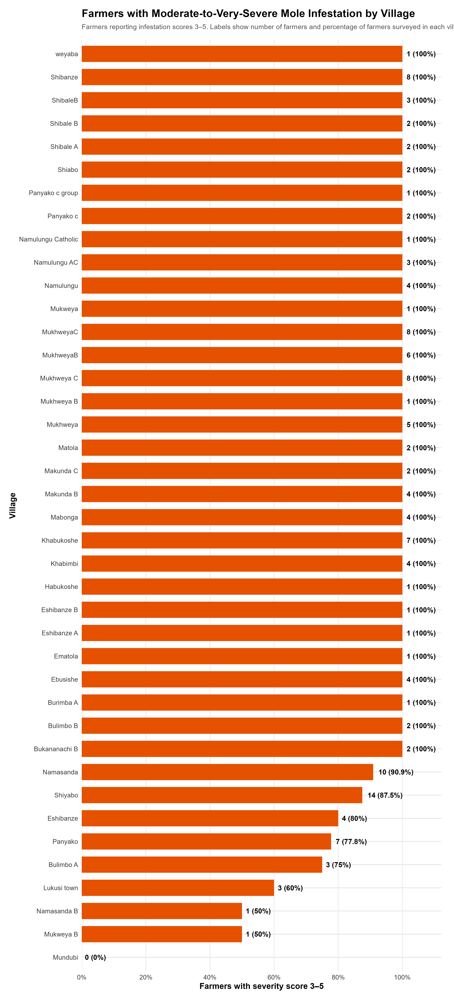
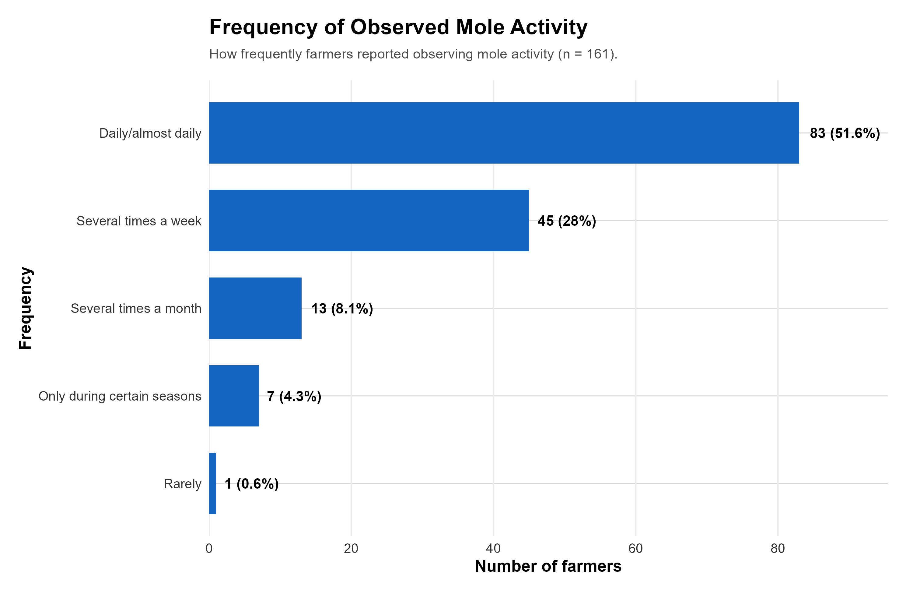
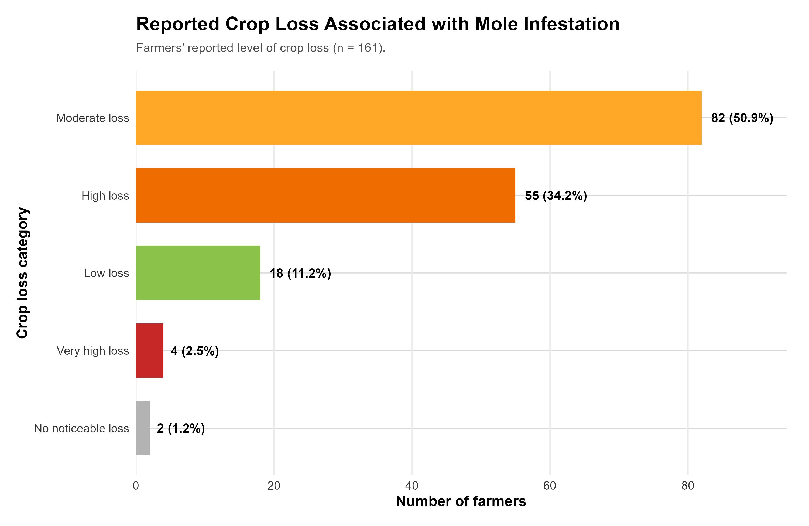
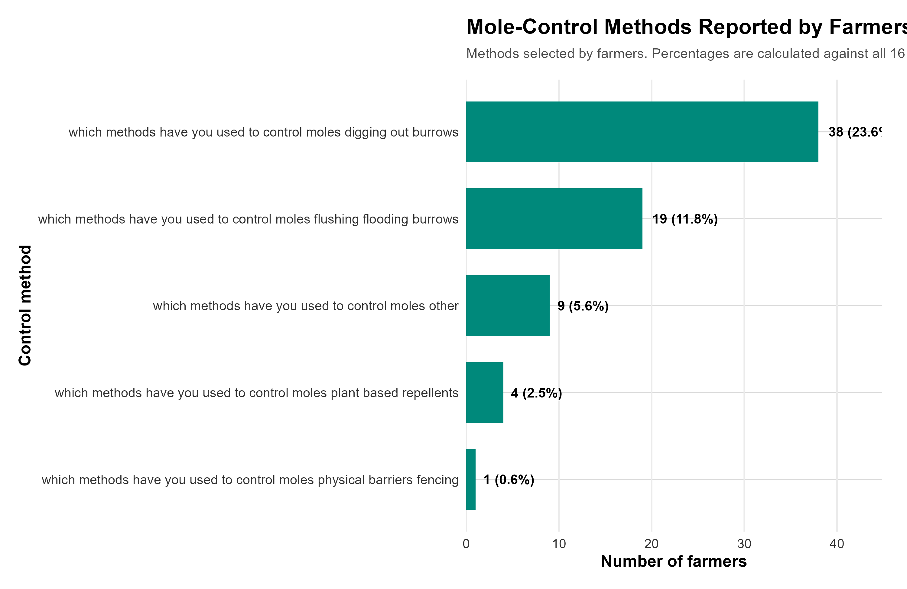
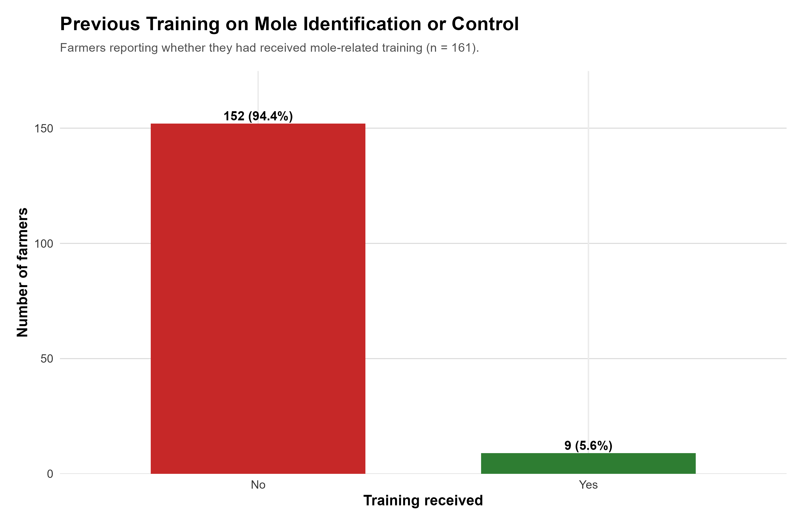

Bulimbo Mole Baseline Analysis Dashboard
Farmer Research Network | Baseline Survey
SOFDI
Farmer Research Network | Baseline Survey
SOFDI
The Bulimbo baseline survey covered 161 farmers and captured 99 recorded variables.
Mole infestation is widespread, with 92.5% of farmers reporting current signs of infestation.
Active mole burrows or signs were observed by 83.2% of farmers.
Infestation severity was substantial, with 85.1% reporting scores between moderate and very severe.
Crop losses were also significant, with 36.6% reporting high or very high losses.







| Support | Farmers | % |
|---|---|---|
| Training | 155 | 96.3% |
| Affordable traps | 90 | 55.9% |
| Practical demonstrations | 84 | 52.2% |
| Technical support | 62 | 38.5% |
| On-farm trials | 62 | 38.5% |
| Extension materials | 38 | 23.6% |
| Gender | Farmers | % |
|---|---|---|
| Female | 93 | 57.8% |
| Male | 68 | 42.2% |
| Indicator | Value |
|---|---|
| Mean age | 47.7 years |
| Median age | 47 years |
| Minimum | 23 years |
| Maximum | 80 years |
| Village | Farmers | Moderate–Very Severe | Current Infestation |
|---|---|---|---|
| Mukhweya C | — | — | — |
| Mukhweya A | — | — | — |
| Mukhweya B | — | — | — |
| Shibale A | — | — | — |
| Shibale B | — | — | — |
| Shibale C | — | — | — |
| Analysis | Chi-square | p-value | Interpretation |
|---|---|---|---|
| Gender vs Current Infestation | 0.1192 | 0.7299 | No statistically detectable association |
| Gender vs Severity 3–5 | 0.1584 | 0.6907 | No statistically detectable association |
The baseline dataset contains several variables with no recorded responses. These should be reviewed before final statistical analysis or reporting.